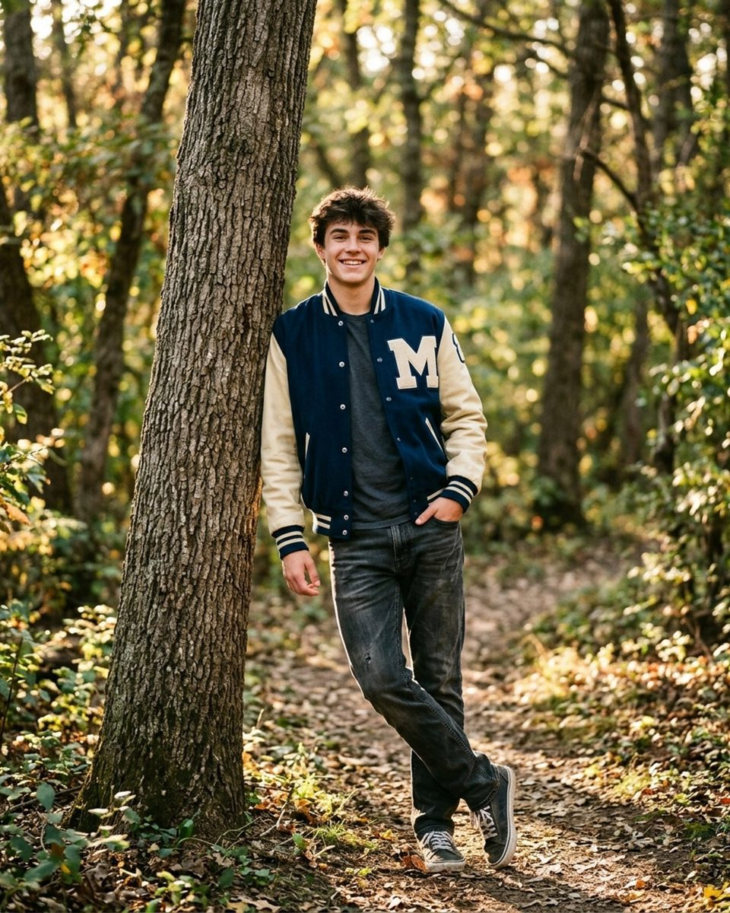
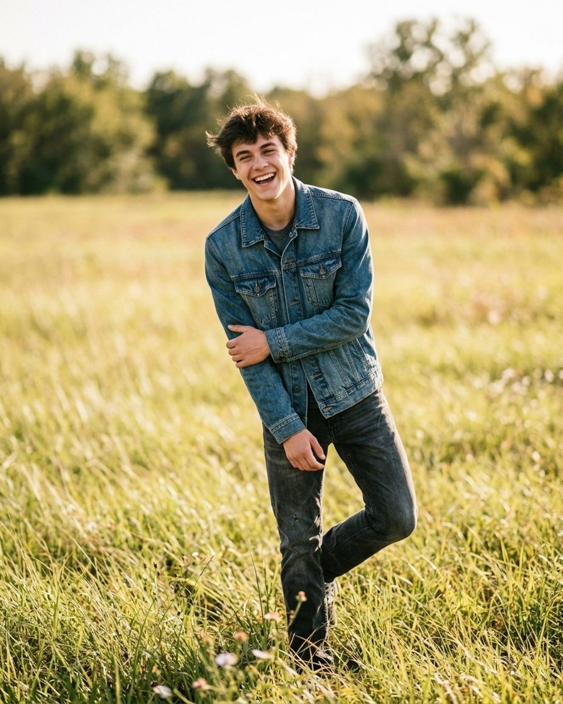
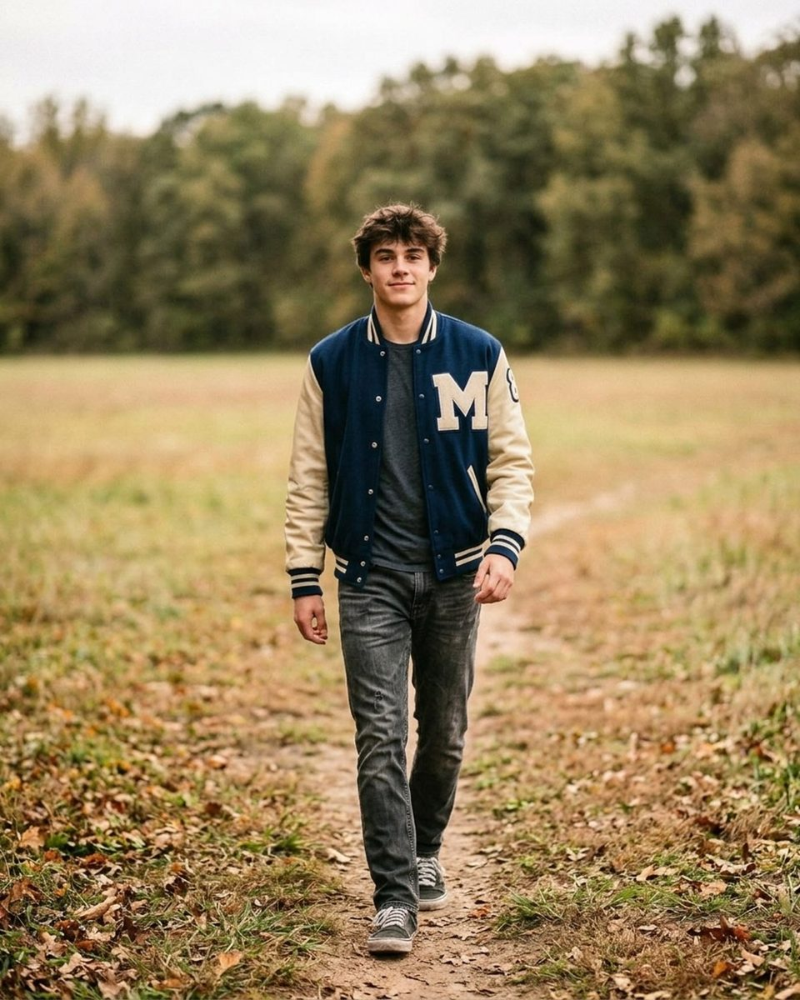
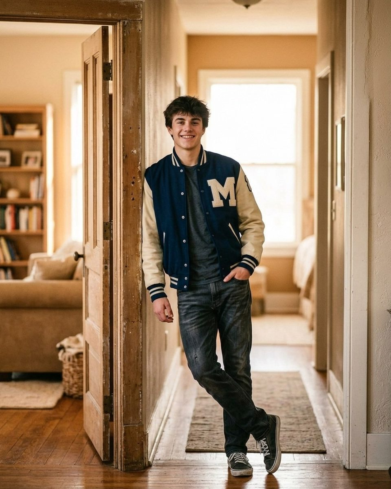

Senior portrait prompts that don't feel awkward
Twenty-three lines for a seventeen-year-old who did not book this session, ordered the way the session runs — every prompt quoted straight from the Prompted catalog.
A senior session is the only portrait session where the person in front of the camera usually did not book it. A parent did, months ago, and the seventeen-year-old walking toward you has spent four years learning that being photographed means a gym backdrop, a comb, and a line of classmates watching. That is the awkwardness you are actually working against, and it is not shyness. It is a well-earned expectation that this will be uncomfortable and then be over. Every prompt below is quoted word for word from the Prompted catalog, with the pose it belongs to, and they are ordered the way a session runs rather than grouped by tone: the first ten minutes, the part where they need a job, the smile problem, movement, and the last few frames. The reference images are AI-generated posing references rather than real session frames — real galleries are being added through the contributor program as photographers submit their own work.

The first ten minutes are always bad
Nothing you say in the first ten minutes will produce your best frame, so stop trying to. What those minutes are for is establishing that this is not picture day: that you are not going to arrange them like furniture, that nobody is waiting behind them, and that a bad frame costs nothing because you are the one who deletes it. Name the awkwardness out loud early. A senior who hears you say the first few minutes are supposed to feel strange stops treating their own discomfort as evidence that they are bad at this.
Every senior feels weird for the first ten minutes. You're right on schedule.
Nervous clientFrom the pose “Rail lean”
Say it the first time you watch the shoulders climb, before you have taken anything you intend to keep. It turns the awkwardness into a schedule instead of a personal failing, and a schedule implies an end.
This isn't picture day. There's no line behind you.
Nervous clientFrom the pose “Cap toss”
For the senior who arrives already braced — standing exactly where you point, holding still as though the shutter is on a timer. They are comparing this to the only photo session they have ever had.
You don't have to smile yet. We're just testing the light on your jacket.
Nervous clientFrom the pose “Skateboard underarm”
Use it on your first two or three frames. It gives them a reason to be in front of the lens that has nothing to do with their face, which is the part they are worried about.
My job is deleting the bad ones. You'll never see them.
Nervous clientFrom the pose “Crossed arms grin”
For the one who asks to see the back of the camera after every frame. Say it once, plainly, then stop offering the screen. The checking is anxiety, and feeding it makes the next twenty minutes harder.
This is the same opening problem as a session full of small children, solved from the other direction: a child has no self-consciousness and too much movement, a teenager has all the self-consciousness and none of the movement. The approach in directing kids without bribing them still applies — give the body something to do and let the expression arrive as a side effect.
Give them a job, not a mood
“Look natural” asks a teenager to perform the absence of performing, in front of an adult they met fifteen minutes ago. It is an impossible instruction and they know it, which is why the face you get back is the one from the yearbook. A physical task is answerable. Shoulders down, weight on the wall, ankles crossed, one breath — each of these can be done correctly, and a senior who is busy doing something correctly is not monitoring their own expression while they do it.
Drop your shoulders and let your arms hang heavy.
CalmFrom the pose “Letterman lean”
The correction for the shoulders-to-ears posture almost every senior starts with. It is worth repeating between setups; the shoulders climb back up every time they think about the lens again.
Lean back on the wall and let it hold all your weight.
CalmFrom the pose “Hands in pockets”
Use it for any lean against a wall, a tree or a door frame. Most people lean by touching the wall rather than resting on it, and the difference between the two is visible in the shoulders and the spine.
Sit however you'd sit if I weren't here.
CalmFrom the pose “Curb sit”
A good first seated frame. It hands the pose back to them, and how a seventeen-year-old actually sits on a curb is usually better than anything you would have arranged.
Take one deep breath and let your face do nothing at all.
CalmFrom the pose “Hands on hips”
For the senior whose smile has gone rigid from holding it too long. Asking for nothing at all resets the face, and the frame you want is often the one a second after the breath.
Cross your ankles, lean back, and study the clouds.
CalmFrom the pose “Field walk”
Useful when you need them still but not staring down the barrel. Looking up also opens the eyes and clears the under-eye shadow you get from a long day at school.
The smile is the whole problem

Ask a senior to smile and you get the one they have been trained to produce since kindergarten: symmetrical, held too long, no eyes in it. You cannot talk someone out of that smile, but you can route around it. Either give them something to actually react to, or take the smile apart and catch it on the way down. The fade is the most reliable trick on this list — the expression on the way out of a smile is softer than anything anybody can hold on purpose.
Give me a fake laugh. Yes, it works every time — see, that one's real.
Nervous clientFrom the pose “Stair perch”
Works on almost everyone and works better when you explain what you are doing. The fake laugh is bad, they know it is bad, and the laugh at how bad it was is the frame.
Show me your yearbook smile — now show me the real one.
PlayfulFrom the pose “Rail lean”
Asking for the yearbook smile on purpose is what makes it possible to put it down. Shoot both — the comparison is often what convinces a skeptical senior that you know what you are doing.
Let the smile fade slowly. Stop. Right there.
CalmFrom the pose “Dress twirl”
Say it while they are still smiling, then wait a beat longer than feels comfortable. Stopping the fade partway leaves the eyes engaged and the mouth relaxed.
Think of the person who makes you laugh most. Don't smile. Try not to.
CalmFrom the pose “Jacket over shoulder”
A quieter version of the same idea, and better for a senior who does not want a big grin in their photos. Telling someone not to smile reliably produces the small one they were suppressing.
Tell me about your weekend while I sort out my settings.
Nervous clientFrom the pose “Mid laugh candid”
Use it while you genuinely are adjusting something. Talking about anything other than the photograph gives the face somewhere to go, and you can shoot straight through the answer.
Movement, for the ones who cannot stand still and be looked at

Some seniors will never settle while standing still, because standing still with a lens on you is the whole problem. Give those ones a distance to cover. Walking fixes posture, arms, and eye contact at once, it burns off the nervous energy that was going into the jaw, and it produces the frame most seniors actually want, which is one where they look like they are on their way somewhere rather than posed in a field.
Walk like you're crossing the parking lot at school. That's it.
Nervous clientFrom the pose “Guitar on steps”
The clearest walking direction on this list, because it names a walk they have done a thousand times. Shoot a burst at the middle of the lane rather than trying to time a single step.
Give me main-character-walking-to-the-bus energy.
PlayfulFrom the pose “Jacket over shoulder”
For a senior who is enjoying themselves and can take a bigger direction. It gets a stride with some intent in it, usually with a laugh at the end of the take.
Strut at me like the hallway is yours. Because it is.
PlayfulFrom the pose “Crossed arms grin”
Best on a second or third pass down the same stretch, once they have stopped watching their feet. Say it to a senior who has already loosened up; it lands badly in the first five minutes.
Do the smallest possible dance move you can get away with.
PlayfulFrom the pose “Hands in pockets”
The version for the kid who would rather die than dance. Setting the bar at the smallest possible movement is a joke they are in on, and the shoulder drop that comes with it is what you are shooting.
Jump on three. One... two... wait for it...
PlayfulFrom the pose “Walk toward camera”
Hold the count deliberately long. The wait is the shot: the anticipation on the face before the jump is generally better than the jump, and you get both in one burst.
Movement also buys you exposure latitude, which matters because senior sessions are so often booked for the last hour of daylight on a weekday. If you are working that window, sequence these against the light using golden hour prompts — the running and walking prompts belong early, while there is still enough sun to freeze them.
Hand them some of the control

A senior session is one of the few times a teenager is photographed for their own sake rather than for somebody else's record of them, and saying so changes how they stand. Give them real authority over the gallery, not flattery. Veto power is easy to offer, costs you very little in practice, and it is the single fastest way to stop someone performing for a camera they think is working against them.
You get veto power on every single frame. You're the editor.
Nervous clientFrom the pose “Window light portrait”
Say it early and then honor it at delivery. A senior who believes they can cut a frame will stop guarding their face in every other one.
Nobody sees these until you've approved them. Deal?
Nervous clientFrom the pose “Chin on hand”
The shorter version, useful for a senior who is worried about a specific thing — braces, acne, a haircut that has not grown out. Answer the worry with control rather than reassurance.
Close your eyes. Open them on my count, right into the lens.
CalmFrom the pose “Guitar on steps”
A reset for eyes that have gone glassy from holding contact too long. It also fixes a blinker, since you are choosing the moment the eyes open.
Slow your walk to half speed and let your eyes wander.
CalmFrom the pose “Over shoulder look”
For the last few frames, when they have stopped bracing. Half speed gives you three or four usable steps instead of one, and wandering eyes read as thinking rather than posing.
Four things not to say
Do not say relax. It names a state rather than an action, and the only thing a person can do in response is notice how unrelaxed they are. Do not say act natural, for the same reason twice over. Do not tell a senior they will be glad to have these in twenty years — it is true, it is what their mother has already said, and it puts the value of the next hour somewhere they cannot feel it. And do not take direction from the parent standing behind you. A mother calling out corrections over your shoulder will shut a seventeen-year-old down faster than anything you could say yourself; if a parent has come along, give them a job that is not watching — holding a jacket, walking ahead to the next spot, standing where the senior cannot see their face. Then direct the person you were hired to photograph, and nobody else. The principle underneath all of this is the same one in what to say to get natural smiles at a family session and what to say when a couple goes stiff: name an action a body can perform, never a feeling it is supposed to arrive at.
The Fall Mini Session Shot List
About 25 poses grouped by family size, each with the words to say. A free PDF, sent once you confirm your address.
One email to confirm, one with the PDF. Unsubscribe any time. No selling, no sharing.
Every prompt in this guide is in the app, with the pose it belongs to.
Prompted is the posing app that is only a posing app: 250+ poses, each with word-for-word prompts in four tones, filtered to the light you're standing in. The sun tracker is free forever.
Get Prompted on the App Store